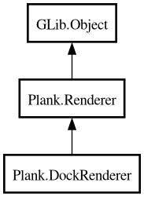

DockRenderer
Object Hierarchy:

Description:
public class DockRenderer :
Renderer
Handles all of the drawing for a dock.
Content:
Properties:
Creation methods:
Methods:
Inherited Members:
All known members inherited from class Plank.Renderer
All known members inherited from class GLib.Object